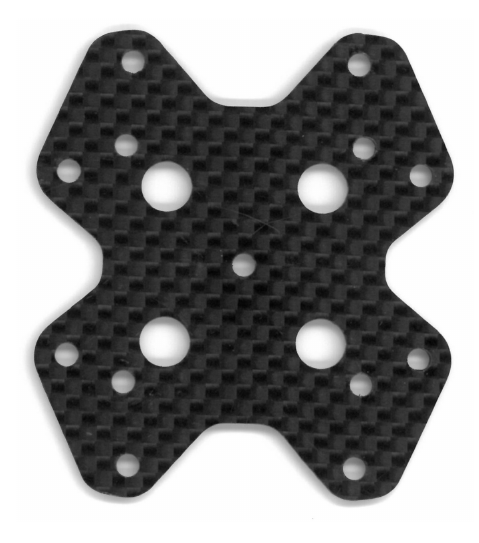
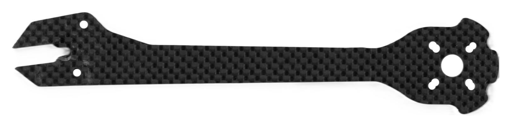
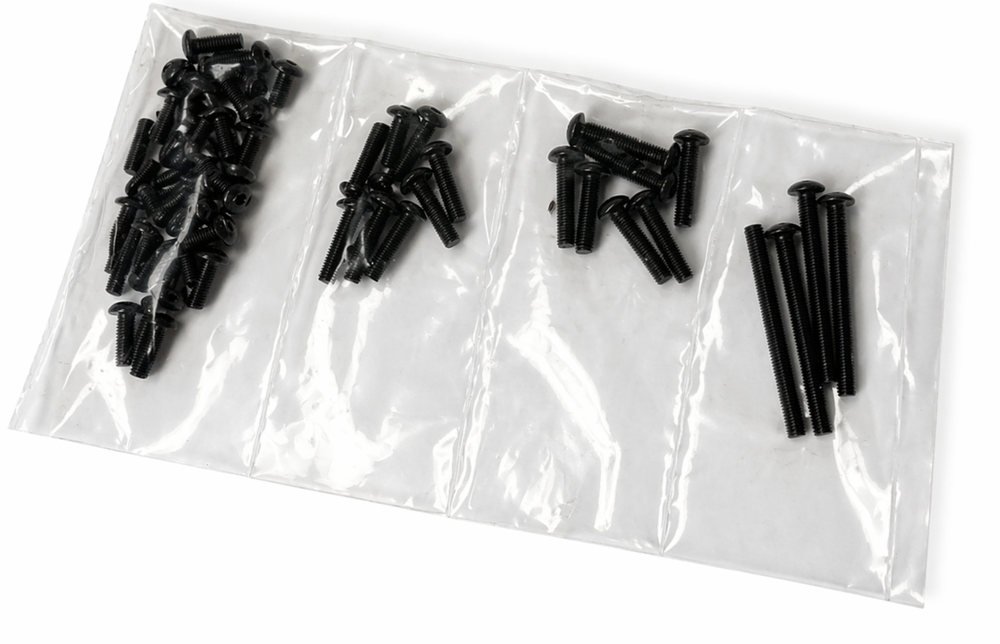
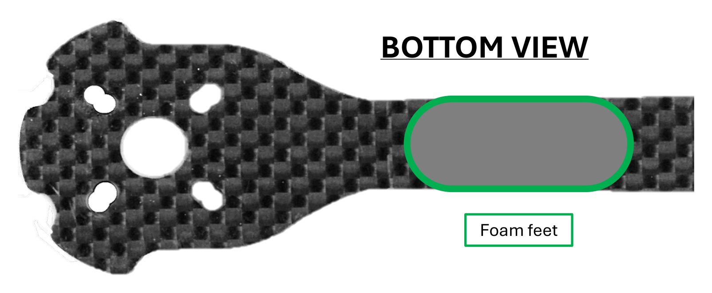

Task 4: Assemble the lower frame
Assemble the bottom plate, hub, arms, lower deck, and foam feet.
Parts required
- Frame kit
- Arm hub
- Bottom plate
- Four motor arms
- Lower deck
- Nine M3 × 12 mm round-head screws
- Four foam feet
Tools required
- 2.0 mm Allen key
Step 1. Identify the frame parts
- Retrieve the frame package from the supplies shelf. Open it carefully because the bag is needed later for parts storage.
- Remove the hub, bottom plate, four motor arms, and lower deck.
- Do not confuse the lower deck with the upper deck. The lower deck has threaded metal inserts that protrude and no Lumenier marking. The upper deck has no protrusions and does have the Lumenier marking.

Arm hub.

Bottom plate.

Motor arm.

Lower deck. Note the protruding metal inserts and no Lumenier marking.
Step 2. Press the hub into the arms

Assemble the hub and arms by friction.
Step 3. Build the lower-frame stack
- Place the arm-and-hub assembly on top of the bottom plate.
- Place the lower deck on top of the arm-and-hub assembly.
- Carefully flip the entire stack so the bottom plate is on top.
- Line up all nine screw holes shown in .
- From the frame kit, use only the M3 × 12 mm round-head screws for this task.
- Hand-start all nine screws first. Then use the 2.0 mm Allen key to tighten them in a crisscross pattern.

Legacy frame-kit image. Use only the M3 × 12 mm bag for this task. The former 30 mm stack screws shown at right are not used in the revised build; the FC/ESC stack hardware is now in the Fastener Kit.
Hardware check.
Use only the M3 × 12 mm round-head screws for this step. The per-system quantity for this task is nine.
Use only the M3 × 12 mm round-head screws for this step. The per-system quantity for this task is nine.

Lower-frame stack before the screws go in.

Bottom view of the assembled lower frame.
Step 4. Install the foam feet
- Retrieve the four foam feet from the frame kit.
- Install one foot at the end of each arm on the bottom side.
- Maintain positive control of the remaining parts and the empty bag.

Install the foam feet on the bottom side of the arms.
Common errors
- Using the upper deck instead of the lower deck.
- Installing the lower deck upside down.
- Driving the screws from the wrong side of the frame stack.
- Mixing up the M3 × 12 mm screws with the other frame-kit screw bags.
- Installing the foam feet on the top side instead of the bottom side.